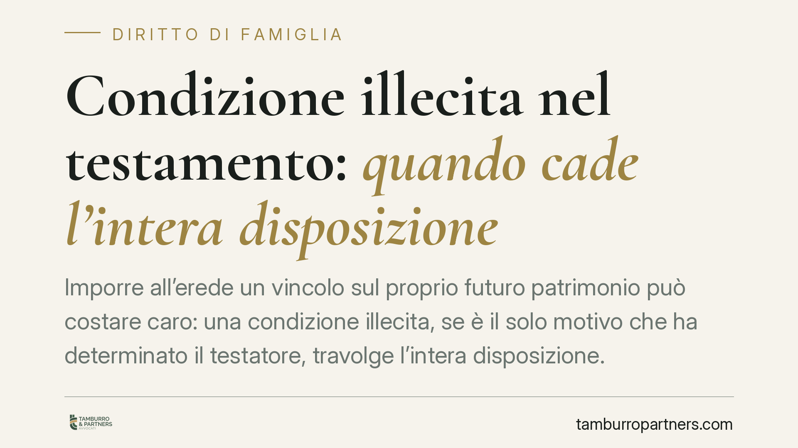

Condizione illecita nel testamento: quando cade l'intera disposizione
Imporre all'erede un vincolo sul proprio futuro patrimonio può costare caro: una condizione illecita, se è il solo motivo che ha determinato il testatore, travolge l'intera disposizione. Il risultato è che chi era destinato a ereditare resta escluso, con conseguenze gravi soprattutto per il convivente di fatto, poco tutelato dalla legge successoria.

Il caso e il principio
Una pronuncia di merito (riferimento ancora da confermare nei suoi estremi esatti) ha riproposto un tema classico del diritto successorio: cosa accade quando il testamento subordina l'acquisto dell'eredità a un vincolo illecito.
Nel caso in esame il testatore avrebbe lasciato un ingente patrimonio alla convivente, imponendole però di nominare a sua volta erede il figlio. Un vincolo di questo tipo comprime la libertà testamentaria della beneficiaria, che è un diritto personalissimo e indisponibile: nessuno può obbligare un altro a disporre dei propri beni in un certo modo per il tempo in cui avrà cessato di vivere.
L'effetto, in concreto, è stato l'esclusione della convivente dalla successione.
Inquadramento normativo
Ocorre distinguere con precisione due istituti spesso confusi.
La regola generale sulle condizioni è l'art. 634 del Codice civile: nelle disposizioni testamentarie le condizioni impossibili e quelle contrarie a norme imperative, all'ordine pubblico o al buon costume "si considerano non apposte". È la cosiddetta regola *vitiatur sed non vitiat*: di norma cade la condizione, non la disposizione, che resta in piedi.
Il ribaltamento interviene con l'art. 626 c.c., che disciplina il motivo illecito: il motivo illecito rende nulla la disposizione solo quando risulta dal testamento ed è il solo che ha determinato il testatore a disporre. È questo il meccanismo che può far "cadere tutto": non la condizione in sé, ma la circostanza che quella finalità illecita sia stata la ragione esclusiva del lascito. Senza quell'obiettivo (vincolare la libertà dell'erede), il testatore non avrebbe disposto affatto.
Va poi chiarito perché la fattispecie non rientra nella sostituzione fiduciaria ammessa dall'art. 692 c.c.. Quella norma consente al testatore di indicare chi dovrà ricevere i beni alla morte dell'erede, ma solo in ipotesi tassative e a tutela di soggetti deboli (ad esempio il discendente interdetto). Fuori da quei limiti soggettivi, il vincolo imposto all'erede sulla destinazione futura dei beni non trova copertura e ricade nel giudizio di illiceità.
Sullo sfondo resta il principio cardine: il testamento è atto personalissimo e sempre revocabile (artt. 587 e 679 c.c.). La libertà di testare non è comprimibile per via negoziale o condizionale.
Implicazioni pratiche
Il punto più delicato riguarda la posizione del convivente di fatto.
A differenza del coniuge e dell'unito civilmente, il convivente non è erede legittimo: se il testamento cade, nulla gli spetta per legge sulla successione. La L. 76/2016 riconosce alla convivenza di fatto alcuni diritti (ad esempio sulla casa di abitazione comune), ma non attribuisce quote ereditarie paragonabili a quelle del coniuge.
Ne deriva una conseguenza pesante: per il convivente il testamento è spesso l'unico strumento di tutela. Se quel testamento è affetto da un vizio strutturale, la protezione svanisce del tutto.
Emerge qui anche il limite del testamento olografo (quello scritto, datato e firmato di pugno dal testatore, senza intervento del notaio): è semplice ed economico, ma proprio la sua informalità lo espone a clausole mal formulate e a vizi che possono comprometterne l'efficacia.
Cosa fare in concreto
- Verificate le clausole condizionali prima di redigere o modificare un testamento: evitate vincoli che impongano all'erede comportamenti su beni o scelte future.
- Valutate strumenti alternativi per tutelare il convivente (donazioni, polizze vita con beneficiario designato, intestazioni mirate), compatibili con i limiti di legge.
- Preferite la forma pubblica per patrimoni rilevanti: il testamento ricevuto dal notaio riduce il rischio di vizi di forma e di contenuto.
- Rispettate le quote dei legittimari (coniuge, figli, in certi casi ascendenti): una disposizione che le lede è impugnabile.
- Riesaminate le volontà quando mutano gli assetti familiari, così che il testo resti coerente e valido.
Disclaimer
Contributo informativo a cura di Tamburro & Partners - Avv. Giuseppe Tamburro. Non costituisce parere legale.
Ogni famiglia ha il suo equilibrio.
Separazione, divorzio, affidamento, assegno: se vuoi un confronto riservato su una specifica situazione, scrivi allo studio. Ti rispondiamo entro un giorno lavorativo.